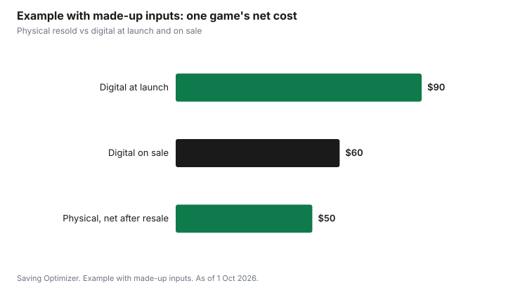

Entertainment · Canada
Digital vs Physical Games in Canada: Resale, Sharing and Price

Buy a game physical if you expect to finish it and sell it, and digital if you will keep it for years or can buy it on sale. A physical copy's real cost is the price minus what you can sell it for later, which can make a new release much cheaper than it looks. A digital copy cannot be resold, but digital stores run frequent sales and the game never gets scratched or lost. Refund rules differ: the PlayStation Store's terms say purchases are final except under its cancellation policy, while Steam allows refund requests within 14 days if you have played less than two hours. Check whether your console has a disc drive before buying physical.
Key takeaways
- Physical net cost = price paid − resale value later.
- Digital cannot be resold or lent, but digital sales and convenience can make it cheaper for games you keep.
- PlayStation Store: purchases are final and non-refundable except as its terms and cancellation policy allow; no refund if the price drops later.
- Steam: refund requests within 14 days with under two hours played.
- Sharing rules depend on the platform; physical discs can be lent to anyone with the same console.
- Example with made-up inputs: a $90 disc sold for $40 costs $50; the same game digital on sale costs $60.
Resale value
A physical game holds some value after you finish it. You can sell it privately, trade it in at a store, or swap it with friends. Compare a store's trade-in offer with recent private sale listings; trade-in is quicker, and a private sale takes more effort. Check current listings for the game to estimate its resale value, and expect that value to change as the game ages and its digital price drops.
| Line | Your numbers |
|---|---|
| Price paid for the disc or cartridge | |
| Expected resale or trade-in value when finished | |
| Net cost = price − resale | |
| Digital price (now or on sale) | |
| Cheaper option |
If you rarely sell games, resale value does not help you, and the comparison is simply the disc price against the digital price.
Sharing rules
A disc or cartridge can be lent to a friend or sibling with the same console. Digital games are tied to an account, and each platform sets its own rules for sharing purchases within a household or across consoles. Those rules change, so read your platform's current support pages before relying on sharing. For families with several consoles or players, sharing rules can decide the question.
| Factor | Physical | Digital |
|---|---|---|
| Lend to a friend | Yes, hand over the disc | Generally no |
| Share in the household | Pass the disc between consoles | Depends on platform rules |
| Resell | Yes | No |
| Lose or damage | Possible | Not possible; tied to account |
| Play without the disc | No | Yes |
Refunds
Refunds are another difference. The PlayStation Network Terms of Service say all PlayStation Store purchases are final and non-refundable except as stated in the terms or the PlayStation Store cancellation policy, and that if the price later drops, you are not entitled to a refund unless your purchase qualifies under that policy. Steam's refund page says you can request a refund for nearly any purchase within 14 days if you have played a game for less than two hours. Physical games bought from a store follow the store's return policy, which often excludes opened games.
| Store | Rule |
|---|---|
| PlayStation Store | Final and non-refundable except under the terms or cancellation policy; no refund for later price drops |
| Steam | Request within 14 days with under two hours played; pre-purchases from release date |
| Physical retail | The store's return policy; opened games are often excluded |
Check the Nintendo eShop and Microsoft Store policies on their own support pages before buying, since they have their own rules.
Sales
Digital stores run sales throughout the year, and older games can drop sharply. Physical games also go on sale, especially around Black Friday and Boxing Day, and used copies are cheaper again. If you are patient, either format can be cheap; the question is which gets cheaper sooner for the game you want.
- Wishlist digital games and buy on sale.
- Compare the digital sale price with a used disc price.
- For new releases you will finish quickly, buy physical and sell.
- For games you will replay for years, digital on sale is often best.
- PC players: see the Steam sale calendar.
Storage
Digital games take up console storage, and large games fill a drive quickly. Expanding storage costs money, so include it if you buy mostly digital. Physical games still often need installing, but you can delete and reinstall from the disc without a long download. Discs take shelf space and can be scratched. Some consoles are sold without a disc drive, which locks you into digital; decide your format before buying the console.
Selling used games safely
If resale is part of your plan, protect the value. Keep the case, any inserts and the disc or cartridge clean, and sell while the game is still in demand. For private sales, meet in a public place, accept payment you can verify before handing over the game, and be wary of buyers who offer to overpay or ask you to ship before paying. The guide to buying used electronics safely covers the same scams from the other side. Trade-in at a store avoids those risks at a lower price.
Gifts and children
Physical games are easier to wrap and give, and a child can trade a finished game with a friend. Digital gift cards for a console store are simpler to send to someone far away and cannot be lost; check the gift card rules in your province in gift card rules by province. For young children who lose or scratch discs, digital purchases on a parent-managed account may last longer.
Example with made-up inputs: one new release
These numbers are an example with made-up inputs. They are not store prices. A player wants a new release. The disc costs $90 at launch; after finishing it in a month, they sell it for $40, for a net cost of $50. The digital version costs $90 at launch, or a made-up $60 if they wait for a sale three months later. A second game they will replay for years costs $40 on a digital sale, with no plan to resell.
| Approach | Price | Resale | Net cost |
|---|---|---|---|
| Physical at launch, resold | $90 | $40 | $50 |
| Digital at launch | $90 | $0 | $90 |
| Digital on sale, later | $60 | $0 | $60 |

Choosing
| If this sounds like you | Lean towards |
|---|---|
| You finish games and sell them | Physical |
| You replay favourites for years | Digital on sale |
| You share with friends who have the same console | Physical |
| You want to switch games without swapping discs | Digital |
| Your console has no disc drive | Digital |
| Children who lose discs | Digital |
For subscriptions that replace buying, see Game Pass versus PS Plus. For hardware, see console new, used or bundle.
Sources
- Sony Interactive Entertainment, PlayStation Network Terms of Service, playstation.com/en-ca, as of 1 Oct 2026. Purchases final and non-refundable except as stated or under the cancellation policy; no refund for later price drops.
- Valve, Steam Refunds, store.steampowered.com, as of 1 Oct 2026. 14 days and two hours.
- The game prices, resale values and totals in the example are an example with made-up inputs.
Frequently asked questions
Is it cheaper to buy games digital or physical?
It depends on whether you resell. A physical game's net cost is the price minus resale value, which can beat digital for games you finish and sell. For games you keep, digital on sale is often cheaper.
Can I get a refund on a PlayStation Store game?
The PlayStation Network Terms of Service say purchases are final and non-refundable except as the terms or the PlayStation Store cancellation policy allow, and later price drops do not qualify for a refund on their own.
What is Steam's refund policy?
Steam says you can request a refund within 14 days of purchase if you have played the game for less than two hours.
How do I sell used games safely?
Keep the case and disc in good condition, meet private buyers in a public place, verify payment before handing over the game, and avoid buyers who want you to ship before paying. Store trade-in is safer but pays less.
Can I share digital games with my family?
Each platform sets its own sharing rules for digital purchases. Read your platform's current support pages. Physical discs can be lent to anyone with the same console.
Researched and drafted with AI assistance and fact-checked against official Canadian sources. How we create content.
Disclosure: Saving Optimizer may earn a commission if a partner link is added later, such as a game store, trade-in or cash-back offer type. No partnership is claimed on this page, and no store, console or game is ranked. Education only.